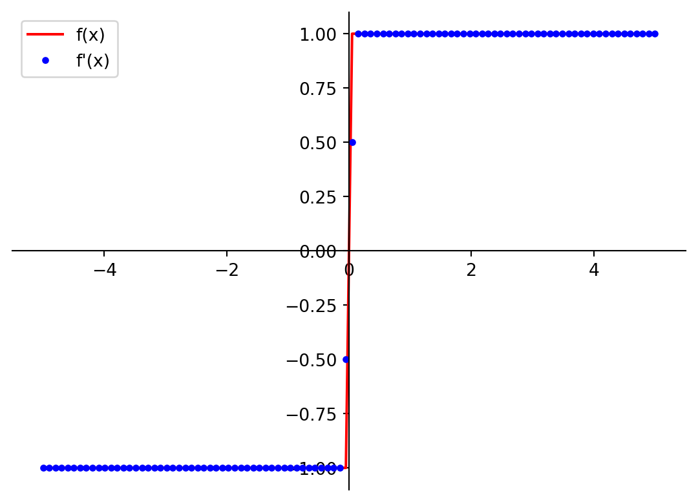

Code
def f(x):
return x**2
print(f(3))9Derivadas com Python
Este artigo foi reescrito em Sexta, 23 de Agosto de 2024.
PythonPara instalar as bibliotecas necessárias, use o comando: !pip install sympy numpy
Usaremos as bibliotecas Sympy, Numpy e JAX
Definição de uma função usando Python
def f(x):
return x**2
print(f(3))9Podemos encontrar a derivada dessa função facilmente usando:
def dfdx(x):
return 2*x
print(dfdx(3))6Além disso, podemos aplicar essa função e calcular a derivada para cada elemento de uma array criada com Numpy:
# primeiro importamos a biblioteca
import numpy as np
# criamos o array
x_array = np.array([1, 2, 3])
# calculamos x^2 para cada elemento do array
#e depois calculamos a derivada para cada elemento
print("x: \n", x_array)
print("f(x) = x**2: \n", f(x_array))
print("f'(x) = 2x: \n", dfdx(x_array))x:
[1 2 3]
f(x) = x**2:
[1 4 9]
f'(x) = 2x:
[2 4 6]Podemos também aplicar as funções f e dfdx para arrays maiores, além disso podemos plotar os gráficos de f e dfdx
import matplotlib.pyplot as plt
def plot_f1_and_f2(f1, f2=None, x_min=-5, x_max=5, label1="f(x)", label2="f'(x)"):
x = np.linspace(x_min, x_max,100)
fig = plt.figure()
ax = fig.add_subplot(1, 1, 1)
ax.spines['left'].set_position('center')
ax.spines['bottom'].set_position('zero')
ax.spines['right'].set_color('none')
ax.spines['top'].set_color('none')
ax.xaxis.set_ticks_position('bottom')
ax.yaxis.set_ticks_position('left')
plt.plot(x, f1(x), 'r', label=label1)
if not f2 is None:
if isinstance(f2, np.ndarray):
plt.plot(x, f2, 'bo', markersize=3, label=label2,)
else:
plt.plot(x, f2(x), 'b', label=label2)
plt.legend()
plt.show()
plot_f1_and_f2(f, dfdx)Computação simbólica lida com a computação de objetos matemáticos que são representados na forma exata, e não aproximadamente (por exemplo, \(\sqrt{2}\) será escrito exatamente assim, e não como \(1.41421356237\). Para a derivada, isso significa que o resultado será de certa forma semelhante ao que seria se você estivesse calculando derivadas manualmente usando regras (analiticamente). Assim, derivadas simbólicas podem produzir resultados exatos.
Derivadas simbólicas em Python usando a biblioteca SymPy.
Podemos calcular o valor decimal aproximado de \(\sqrt{18}\)
import math
math.sqrt(18)4.242640687119285Introdução à Computação Simbólica com SymPy
Agora se quisermos calcular: \(\sqrt{18} = \sqrt{9 \cdot 2} = 3\sqrt{2}\)
# Esse formato de importação de módulo permite
# usar as funções sympy sem o prefixo sympy.
from sympy import *
# Na verdade, essa é a função sympy.sqrt,
# mas o prefixo sympy. foi omitido.
sqrt(18)\(\displaystyle 3 \sqrt{2}\)
Para obtermos o valor aproximado fazemos
N(sqrt(18))\(\displaystyle 4.24264068711928\)
No SymPy, as variáveis são definidas usando símbolos. Nesta biblioteca específica, elas precisam ser pré-definidas (uma lista delas deve ser fornecida). Veja na célula abaixo como a expressão simbólica, correspondente à expressão matemática \(2x^2 - xy\), é definida:
# Lista de símboos
x, y = symbols('x y')
# Definição da expressão.
expr = 2 * x**2 - x * y
expr\(\displaystyle 2 x^{2} - x y\)
Pode realizar várias manipulações com essa expressão: adicionar ou subtrair alguns termos, multiplicar por outras expressões, etc., assim como se estivesse fazendo isso manualmente:
expr_manip = x * (expr + x * y + x**3)
expr_manip\(\displaystyle x \left(x^{3} + 2 x^{2}\right)\)
Agora, vamos calcular a derivada da expressão \(2x^2 - xy\) em relação a \(x\):
# Derivada da expressão em relação a x.
diff(expr, x)\(\displaystyle 4 x - y\)
Podemos expandir a função expr_manipulada para obter a expressão completa:
expand(expr_manip)\(\displaystyle x^{4} + 2 x^{3}\)
Podemos também simplificar a expressão:
simplify(expr_manip)\(\displaystyle x^{3} \left(x + 2\right)\)
Também podemos fatorear a expressão:
factor(expr_manip)\(\displaystyle x^{3} \left(x + 2\right)\)
Podemos também resolver equações simbolicamente:
# Resolvendo a equação x^2 - 1 = 0.
solve(x**2 - 1, x)[-1, 1]Podemos substituir valores específicos para as variáveis na expressão
expr.evalf(subs={x:-1, y:2})\(\displaystyle 4.0\)
Isso pode ser usado para avaliar uma função \(f\left(x\right) = x^2\):
f_symb = x ** 2
f_symb.evalf(subs={x:3})\(\displaystyle 9.0\)
Podemos avaliar uma função simbólica para cada elemento de uma matriz:
# Definindo uma matriz simbólica.
x_array = np.array([1, 2, 3])
try:
f_symb(x_array)
except TypeError as err:
print(err)
# Convertendo a função simbólica em uma função numpy.
from sympy.utilities.lambdify import lambdify
f_symb_numpy = lambdify(x, f_symb, 'numpy')
print("x: \n", x_array)
print("f(x) = x**2: \n", f_symb_numpy(x_array))'Pow' object is not callable
x:
[1 2 3]
f(x) = x**2:
[1 4 9]SymPySe quisermos calcular a derivada da função \(f(x) = x^2\) simbolicamente, podemos fazer isso com o SymPy:
# Definindo a função simbólica.
f_symb = x ** 2
# Calculando a derivada da função simbólica.
dfdx_symb = diff(f_symb, x)
dfdx_symb\(\displaystyle 2 x\)
O Sympy aplica todas as regras de derivação para obter a derivada da função \((exp(-2x) + 3sin(3x), x)\):
f_symb = exp(-2*x) + 3*sin(3*x)
dfdx_symb = diff(f_symb, x)
f_symb, dfdx_symb(3*sin(3*x) + exp(-2*x), 9*cos(3*x) - 2*exp(-2*x))Agora vamos plotar a função e sua derivada:
f_symb_numpy = lambdify(x, f_symb, 'numpy')
dfdx_symb_numpy = lambdify(x, dfdx_symb, 'numpy')
plot_f1_and_f2(f_symb_numpy, dfdx_symb_numpy)Agora vamos calcular a derivada da função \(f(x) = 2x\) simbolicamente:
f_symb_numpy = lambdify(x, f_symb, 'numpy')
dfdx_symb_numpy = lambdify(x, dfdx_symb, 'numpy')
print("x: \n", x_array)
print("f'(x) = 2x: \n", dfdx_symb_numpy(x_array))x:
[1 2 3]
f'(x) = 2x:
[-9.18060304 8.6049013 -8.20512986]Agora vamos plotar a função e sua derivada:
# plote a função e sua derivada
plot_f1_and_f2(f_symb_numpy, dfdx_symb_numpy)
\[\left|x\right| = \begin{cases} x, \ \text{if}\ x > 0\\ -x, \ \text{if}\ x < 0 \\ 0, \ \text{if}\ x = 0\end{cases}\] Analiticamente, anderivada é: \[\frac{d}{dx}\left(\left|x\right|\right) = \begin{cases} 1, \ \text{if}\ x > 0\\ -1, \ \text{if}\ x < 0\\\ \text{does not exist}, \ \text{if}\ x = 0\end{cases}\] Podemos calcular a derivada da função \(f(x) = \left|x\right|\) simbolicamente:
dfdx_abs = diff(abs(x),x)
dfdx_abs\(\displaystyle \frac{\left(\operatorname{re}{\left(x\right)} \frac{d}{d x} \operatorname{re}{\left(x\right)} + \operatorname{im}{\left(x\right)} \frac{d}{d x} \operatorname{im}{\left(x\right)}\right) \operatorname{sign}{\left(x \right)}}{x}\)
Outro exemplo \(x=-2\):
dfdx_abs.evalf(subs={x:-2})\(\displaystyle - \left. \frac{d}{d x} \operatorname{re}{\left(x\right)} \right|_{\substack{ x=-2 }}\)
De fato, há problemas com a avaliação das expressões simbólicas sempre que há um “salto” na derivada (por exemplo, as expressões da função são diferentes para diferentes intervalos de \(x\)), como acontece com \(\frac{d}{dx}(|x|)\).
Além disso, você pode ver neste exemplo que é possível obter uma função muito complicada como resultado da computação simbólica. Isso é chamado de aumento de expressão, que resulta em cálculos não suficientemente lentos.
Derivadas Numéricas são calculadas numericamente, ou seja, aproximadamente. Isso significa que a derivada é calculada para um valor específico de \(x\) e é uma aproximação do valor real da derivada. A precisão da derivada numérica depende do valor de \(h\) (o passo de Derivada). Quanto menor o valor de \(h\), mais precisa será a derivada, mas também mais lenta será a computação.
Python usando a biblioteca NumPy.x_array_2 = np.linspace(-5, 5, 100)
dfdx_numerical = np.gradient(f(x_array_2), x_array_2)
plot_f1_and_f2(dfdx_symb_numpy, dfdx_numerical, label1="f'(x) exact", label2="f'(x) approximate")dfdx_composed = diff(exp(-2*x) + 3*sin(3*x), x)
dfdx_symb_numpy = lambdify(x, dfdx_symb, 'numpy')
# plote a função e sua derivada
def f_composed(x):
return np.exp(-2*x) + 3*np.sin(3*x)
plot_f1_and_f2(lambdify(x, dfdx_composed, 'numpy'), np.gradient(f_composed(x_array_2), x_array_2),
label1="f'(x) exact", label2="f'(x) approximate")Obviamente, a primeira desvantagem da Derivada numérica é que ela não é exata. No entanto, sua precisão normalmente é suficiente para aplicativos de aprendizado de máquina. Nesse estágio, não há necessidade de avaliar os erros da Derivada numérica.
Outro problema é semelhante ao que apareceu na Derivada simbólica: ela é imprecisa nos pontos em que há “saltos” da derivada. Vamos comparar a derivada exata da função de valor absoluto e a aproximação numérica:
def dfdx_abs(x):
if x > 0:
return 1
else:
if x < 0:
return -1
else:
return None
plot_f1_and_f2(np.vectorize(dfdx_abs), np.gradient(abs(x_array_2), x_array_2))